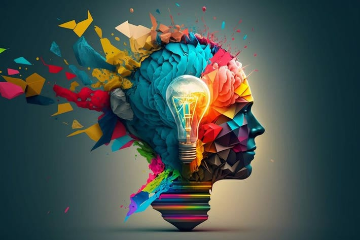

AI and Creativity
Can AI be creative? Explore how AI is used in arts, music, and literature, challenging traditional notions of human creativity. AI-generated artworks, compositions, and writings are pushing the boundaries of what is considered creative expression, prompting discussions about the nature of art and the role of human intentionality in creative processes. While AI can replicate certain aspects of creativity, debates continue about whether it can truly capture the essence of human creativity and imagination.
Q1: How is AI used in creating art?
Q2: How does AI contribute to music composition?
Q3: Can AI write literature or poetry?
Q4: What are some challenges in using AI for creative tasks?